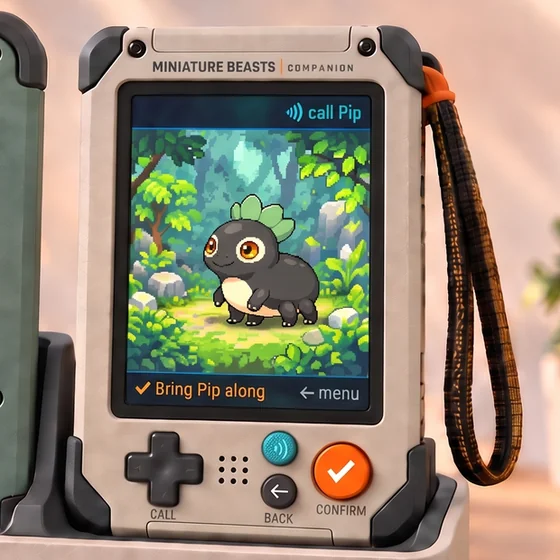
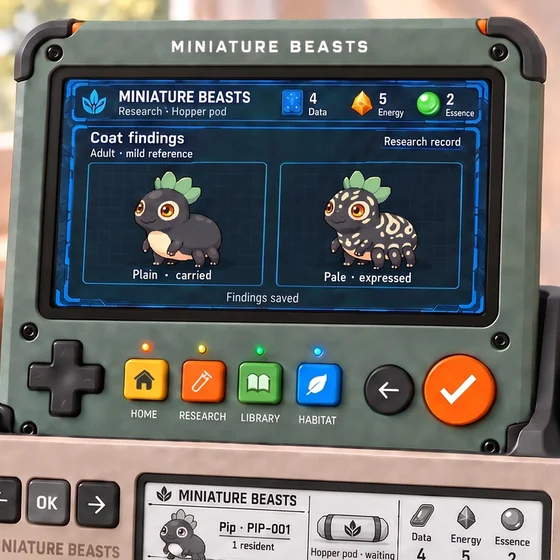
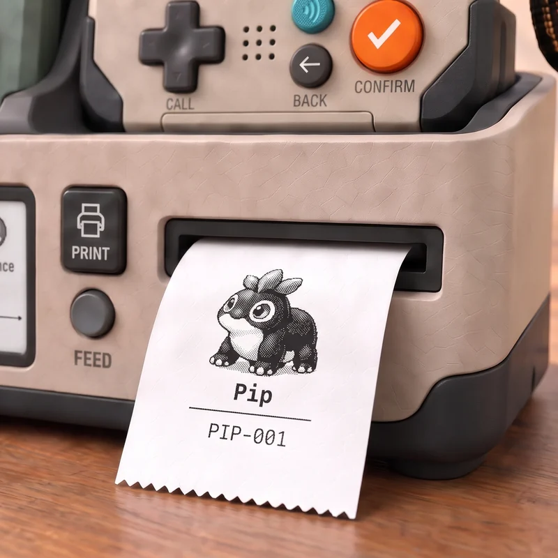
Expedition
Walk into the fog.
Bring something home.
Every step lifts the fog. Places react to you: shake a bush, wait, see who comes to eat. Storms charge stones with Energy and can break your Probe. Pick up sealed pods.
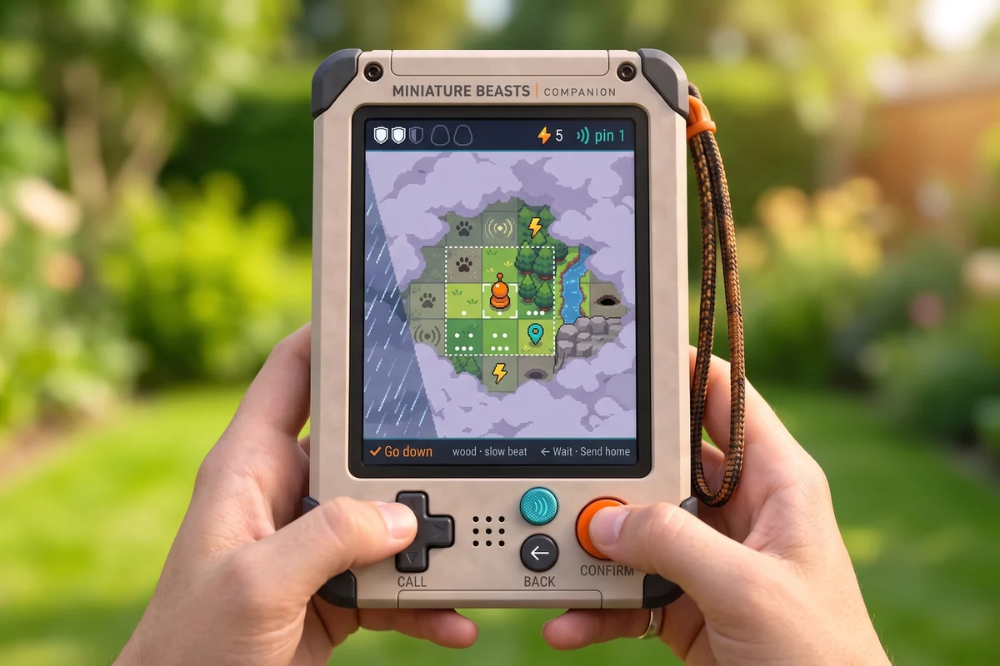
Station
Open the pod.
Decide what it becomes.
One pod makes one mibi. Hatch it as it is, or study it first and choose from what it already carries. Energy, Data and Essence from the field power it all. Try the Station build in your browser.
- Data
- Energy
- Essence
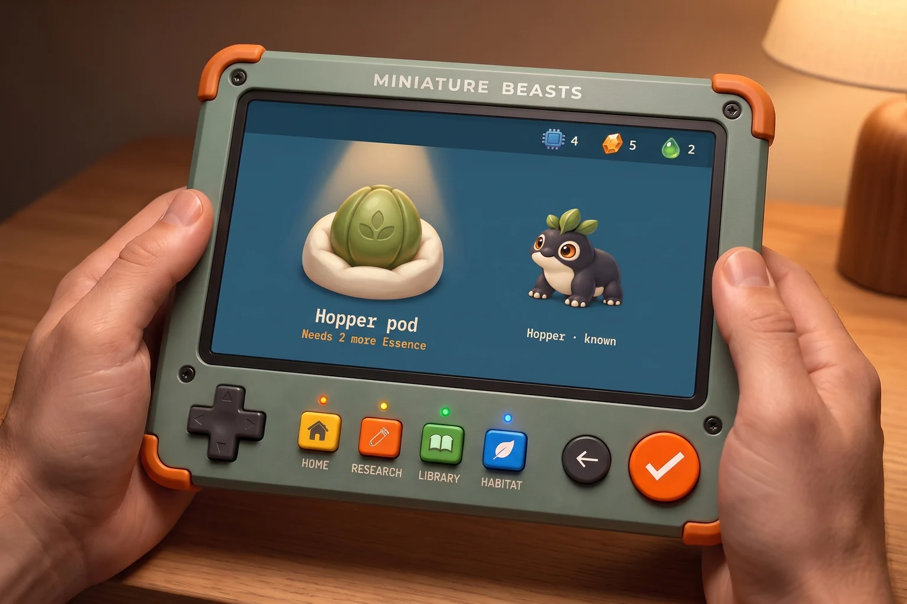
Caddy
Dock the kit.
Print what you find.
The Caddy charges both handhelds, lets them talk to each other and connects the kit to the cloud. Its printer is part of play: a module that answers what you do, card by card.
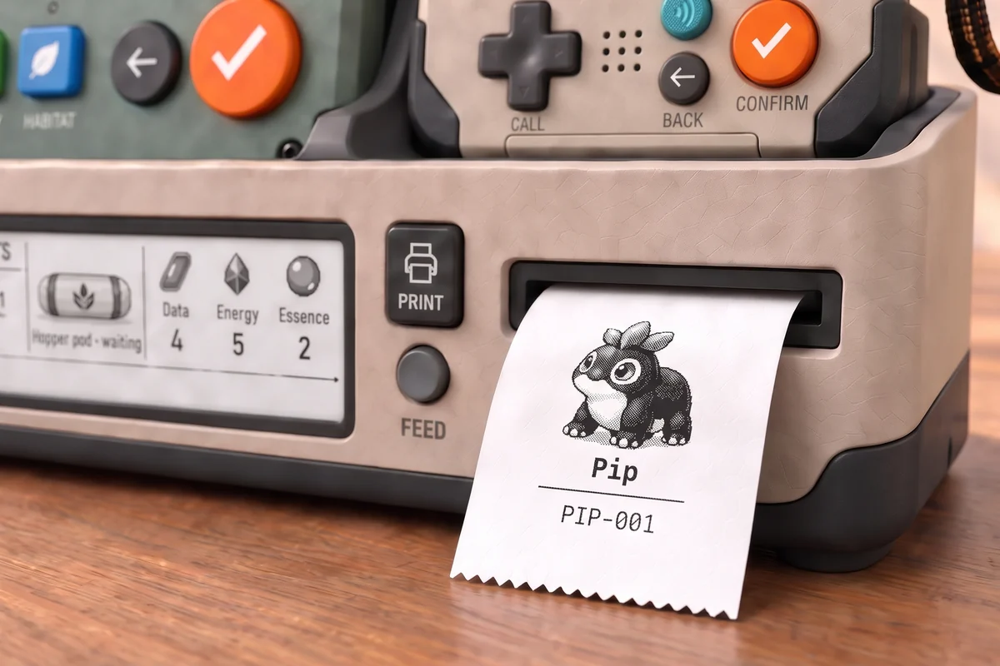
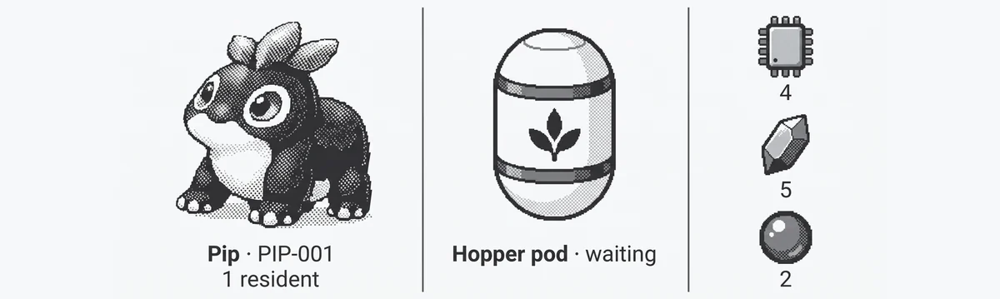
Genetics
One species.
Endless families.
Every pup is new: coat, markings, crown, ears, size. Some traits hide for a generation and come back. Breed for what you love; your family is yours to shape. The rules already run in the species workbench.
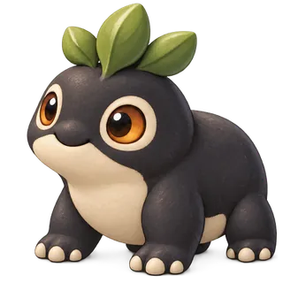
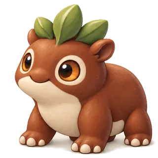
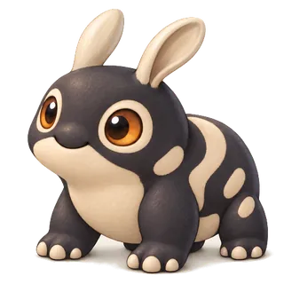
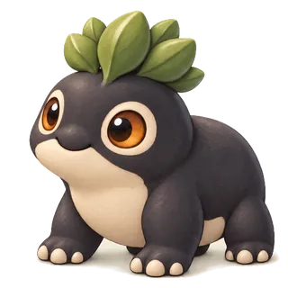
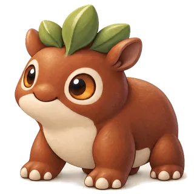
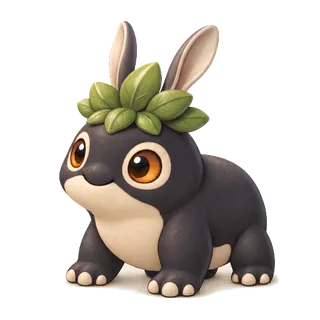
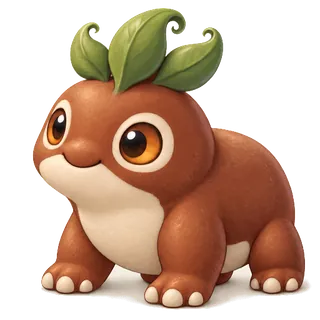
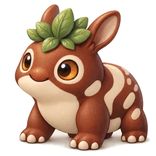
Pale islands, last seen on grandmother Sable.
ConceptAn imagined family of Pip’s species; generated portraits, not from the game.
Life
Raise partners.
Grow families.
Bond with a mibi and it comes along, digging, calming, sniffing out buried pods. It grows from juvenile to elder, and its children remember where their genes came from.
Partner at work
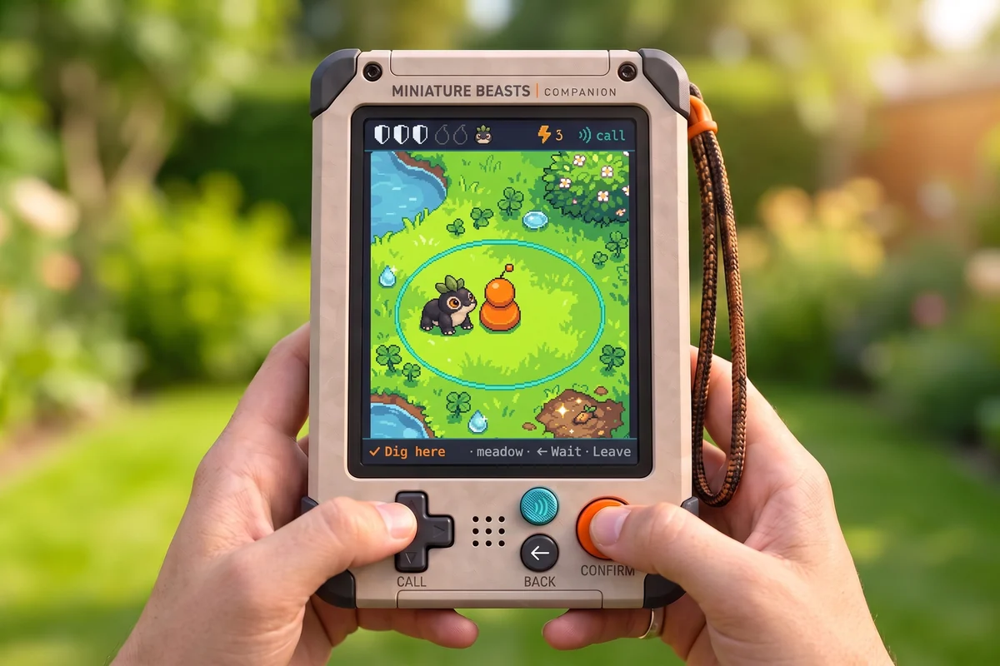
A whole life
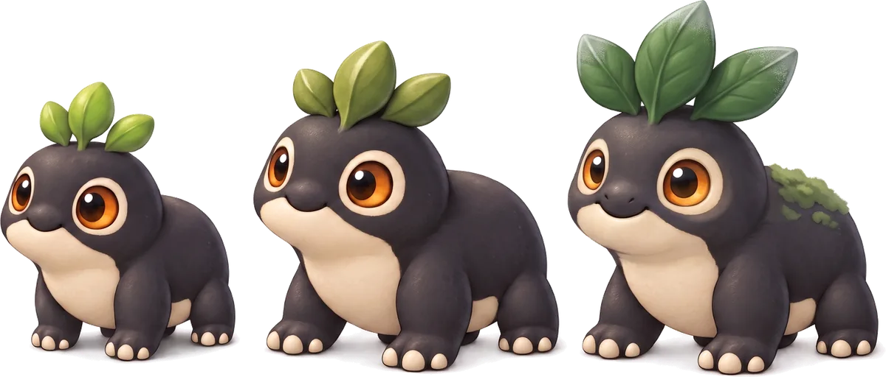
- Juvenile
- Adult
- Elder
A few fair questions.
Is it real?
The exploration field test is real: pictures marked ROUGH PLAYABLE come from it. Pictures marked CONCEPT are generated art; no device exists yet. The game gets proven in software first, then boards and cases.
When can I get one?
There’s no date and no price yet. The roadmap shows what is being built now and what comes next.
Can I build one myself?
Not yet: the hardware isn’t designed. When it is, the boards and cases will be published as open hardware, to print and put together with common tools. The software is open source already.
Do I need to know genetics?
No. You play by looking, comparing and breeding. The real framework underneath is there for the curious: read the genetics design.